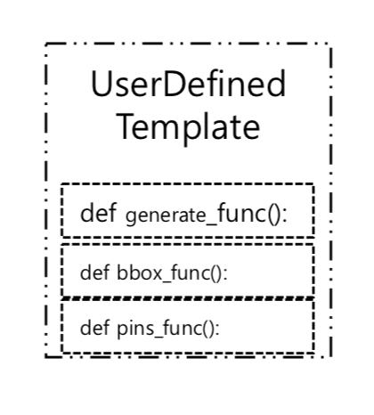
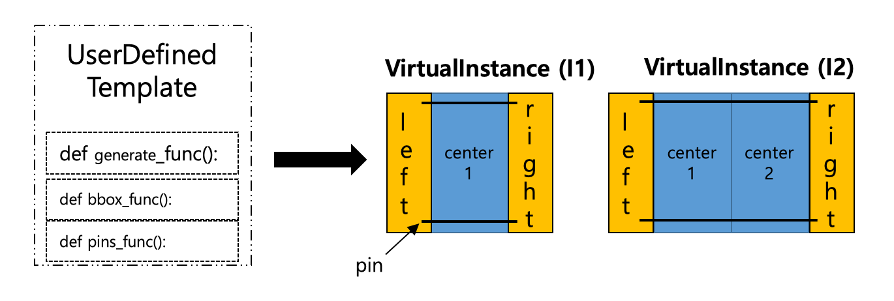

UserDefinedTemplate class#
- class laygo2.object.template.UserDefinedTemplate(bbox_func, pins_func, generate_func, name=None)[source]#
Bases:
TemplateUserDefinedTemplate class implements the template that generates a VirtualInstance object corresponding to the template and input parameters.
Notes
(Korean) UserDefinedTemplate 클래스는 VirtualInstance를 반환하는 템플릿을 구현한다.
Public Data Attributes:
Inherited from
TemplatenameTemplate name.
Public Methods:
__init__(bbox_func, pins_func, generate_func)Constructor function of UserDefinedTemplate class.
bbox([params])Return bbox of UserDefinedTemplate object.
pins([params])Pins of UserDefinedTemplate object.
generate([name, shape, pitch, transform, ...])Generate a VirtualInstance object by calling generate_func() bound to the template.
Inherited from
Template__init__([name])The constructor function.
__str__()Return a string representation of this template's information.
summarize()Return the summary of the template information.
height([params])int: Return the height of the template.
width([params])int: Return the width of the template.
size([params])int: Return the size of the template.
bbox([params])numpy.ndarray: (Abstract method) the physical bounding box of the template.
pins([params])dict: (Abstract method) Dictionary storing the pins of the template.
generate([name, shape, pitch, transform, ...])instance: (Abstract method) Generate an instance from the template.
- __init__(bbox_func, pins_func, generate_func, name=None)[source]#
Constructor function of UserDefinedTemplate class.
- Parameters:
bbox_func (callable) – The function that computes the bounding box of the template from its input parameters.
pins_func (callable) – The function that returns a dictionary that contains its pin objects for its input parameters.
generate_func (callable) – The function that returns a generated VirtualInstance object for its input parameters.
name (str) – The name of the template.
- Return type:
Example
>>> import numpy as np >>> from laygo2.object.template import UserDefinedTemplate >>> from laygo2.object.physical import Pin, Rect, VirtualInstance >>> # bbox computation function. >>> def user_bbox_func(params): >>> return np.array([[0, 0], [100 * params["mult"], 100]]) >>> # pin generation function. >>> def user_pins_func(params): >>> template_pins = dict() >>> for i in range(params["mult"]): >>> template_pins["in" + str(i)] = Pin( >>> xy=[[i * 100 + 0, 0], [i * 100 + 10, 10]], >>> layer=["M1", "drawing"], >>> netname="in" + str(i), >>> ) >>> template_pins["out" + str(i)] = Pin( >>> xy=[[i * 100 + 90, 90], [i * 100 + 90, 100]], >>> layer=["M1", "drawing"], >>> netname="out" + str(i), >>> ) >>> return template_pins >>> # instance generation function. >>> def user_generate_func( >>> name=None, shape=None, pitch=np.array([0, 0]), transform="R0", >>> params=None): >>> m = params["mult"] >>> shape = np.array([1, 1]) if shape is None else np.asarray(shape) >>> inst_pins = user_pins_func(params) >>> inst_native_elements = dict() >>> for i in range(m): >>> ofst = i * 100 >>> inst_native_elements["R0_" + str(i)] = Rect( >>> xy=[[ofst, 0], [ofst + 10, 10]], layer=["M1", "drawing"] >>> ) >>> inst_native_elements["R1_" + str(i)] = Rect( >>> xy=[[ofst + 90, 90], [ofst + 100, 100]], layer=["M1", "drawing"] >>> ) >>> inst_native_elements["R2"] = Rect( >>> xy=[[0, 0], [m * 100, 100]], layer=["prBoundary", "drawing"] >>> ) >>> inst = VirtualInstance( >>> name=name, >>> libname="mylib", >>> cellname="myvinst", >>> xy=np.array([0, 0]), >>> native_elements=inst_native_elements, >>> shape=shape, >>> pitch=pitch, >>> unit_size=[m * 100, 100], >>> pins=inst_pins, >>> transform=transform, >>> params=params, >>> ) >>> return inst >>> # UserDefinedTemplate construction. >>> user_temp = UserDefinedTemplate( >>> name="myusertemplate", >>> bbox_func=user_bbox_func, >>> pins_func=user_pins_func, >>> generate_func=user_generate_func, >>> ) >>> # VirtualInstance generation. >>> user_inst = user_temp.generate(name="myinst", params={"mult": 5}) >>> # Display >>> print(user_temp) <laygo2.object.template.UserDefinedTemplate object at 0x00000192BF990130> name: myusertemplate, class: UserDefinedTemplate, >>> print(user_inst) <laygo2.object.physical.VirtualInstance object at 0x00000192BF990280> name: myinst, class: VirtualInstance, xy: [0, 0], params: {'mult': 5}, size: [500, 100], shape: [1, 1], pitch: [500, 100], transform: R0, pins: {'in0': <laygo2.object.physical.Pin object at 0x00000192BF9930D0>, 'out0': <laygo2.object.physical.Pin object at 0x00000192BF9931C0>, 'in1': <laygo2.object.physical.Pin object at 0x00000192BF993760>, 'out1': <laygo2.object.physical.Pin object at 0x00000192BF9936A0>, 'in2': <laygo2.object.physical.Pin object at 0x00000192BF993610>, 'out2': <laygo2.object.physical.Pin object at 0x00000192BF9935B0>, 'in3': <laygo2.object.physical.Pin object at 0x00000192BF9932E0>, 'out3': <laygo2.object.physical.Pin object at 0x00000192BF9931F0>, 'in4': <laygo2.object.physical.Pin object at 0x00000192BF993130>, 'out4': <laygo2.object.physical.Pin object at 0x00000192BF9930A0>}, native elements: {'R0_0': <laygo2.object.physical.Rect object at 0x0...>, 'R1_0': <laygo2.object.physical.Rect object at 0x0...>, 'R0_1': <laygo2.object.physical.Rect object at 0x0...>, 'R1_1': <laygo2.object.physical.Rect object at 0x0...>, 'R0_2': <laygo2.object.physical.Rect object at 0x0...>, 'R1_2': <laygo2.object.physical.Rect object at 0x0...>, 'R0_3': <laygo2.object.physical.Rect object at 0x0...>, 'R1_3': <laygo2.object.physical.Rect object at 0x0...>, 'R0_4': <laygo2.object.physical.Rect object at 0x0...>, 'R1_4': <laygo2.object.physical.Rect object at 0x0...>, 'R2': <laygo2.object.physical.Rect object at 0x000...>} >>> print(user_inst.bbox) [[ 0 0] [500 100]]
Notes
(Korean) UserDefinedTemplate 클래스의 생성자 함수.
- 파라미터
bbox_func(callable): bbox를 연산하는 함수.
pins_func(callable): pins를 생성하는 함수.
generate_func(callable): VirtualInstance를 생성하는 함수.
name(str): 템플릿 이름
- 반환값
laygo2.object.template.UserDefinedTemplate
- bbox(params=None)[source]#
Return bbox of UserDefinedTemplate object.
- Parameters:
params (dict) – A dictionary that contains input parameters corresponding to the bounding box to be computed.
- Returns:
numpy.ndarray – coordinates corresponding to the input parameters.
- Return type:
A 2x2 numpy array that contains the bounding box
Example
>>> import numpy as np >>> from laygo2.object.template import UserDefinedTemplate >>> from laygo2.object.physical import Pin, Rect, VirtualInstance >>> # bbox computation function. >>> def user_bbox_func(params): >>> return np.array([[0, 0], [100 * params["mult"], 100]]) >>> # pin generation function. >>> def user_pins_func(params): >>> template_pins = dict() >>> for i in range(params["mult"]): >>> template_pins["in" + str(i)] = Pin( >>> xy=[[i * 100 + 0, 0], [i * 100 + 10, 10]], >>> layer=["M1", "drawing"], >>> netname="in" + str(i), >>> ) >>> template_pins["out" + str(i)] = Pin( >>> xy=[[i * 100 + 90, 90], [i * 100 + 90, 100]], >>> layer=["M1", "drawing"], >>> netname="out" + str(i), >>> ) >>> return template_pins >>> # instance generation function. >>> def user_generate_func( >>> name=None, shape=None, pitch=np.array([0, 0]), transform="R0", >>> params=None): >>> m = params["mult"] >>> shape = np.array([1, 1]) if shape is None else np.asarray(shape) >>> inst_pins = user_pins_func(params) >>> inst_native_elements = dict() >>> for i in range(m): >>> ofst = i * 100 >>> inst_native_elements["R0_" + str(i)] = Rect( >>> xy=[[ofst, 0], [ofst + 10, 10]], layer=["M1", "drawing"] >>> ) >>> inst_native_elements["R1_" + str(i)] = Rect( >>> xy=[[ofst + 90, 90], [ofst + 100, 100]], layer=["M1", "drawing"] >>> ) >>> inst_native_elements["R2"] = Rect( >>> xy=[[0, 0], [m * 100, 100]], layer=["prBoundary", "drawing"] >>> ) >>> inst = VirtualInstance( >>> name=name, >>> libname="mylib", >>> cellname="myvinst", >>> xy=np.array([0, 0]), >>> native_elements=inst_native_elements, >>> shape=shape, >>> pitch=pitch, >>> unit_size=[m * 100, 100], >>> pins=inst_pins, >>> transform=transform, >>> params=params, >>> ) >>> return inst >>> # UserDefinedTemplate construction. >>> user_temp = UserDefinedTemplate( >>> name="myusertemplate", >>> bbox_func=user_bbox_func, >>> pins_func=user_pins_func, >>> generate_func=user_generate_func, >>> ) >>> user_temp.bbox(params={"mult": 5}) array([[ 0, 0], [500, 100]])

Notes
(Korean) UserDefinedTemplate 객체의 bbox 반환.
- generate(name=None, shape=None, pitch=None, transform='R0', netmap=None, params=None)[source]#
Generate a VirtualInstance object by calling generate_func() bound to the template.
- Parameters:
name (str) – name of the instance to be generated.
shape (numpy.ndarray, optional.) – shape of the object to be generated.
pitch (numpy.ndarray, optional.) – pitch of the object to be generated.
transform (str, optional.) – transformation attribute of the entity to be generated.
netmap (dict, optional.) – dictionary containing netmap conversion information of pins.
params (dict, optional.) – dictionary having the entity attributes.
- Returns:
laygo2.object.physical.VirtualInstance
- Return type:
The generated VirtualInstance object.
Example
>>> import numpy as np >>> from laygo2.object.template import UserDefinedTemplate >>> from laygo2.object.physical import Pin, Rect, VirtualInstance >>> # bbox computation function. >>> def user_bbox_func(params): >>> return np.array([[0, 0], [100 * params["mult"], 100]]) >>> # pin generation function. >>> def user_pins_func(params): >>> template_pins = dict() >>> for i in range(params["mult"]): >>> template_pins["in" + str(i)] = Pin( >>> xy=[[i * 100 + 0, 0], [i * 100 + 10, 10]], >>> layer=["M1", "drawing"], >>> netname="in" + str(i), >>> ) >>> template_pins["out" + str(i)] = Pin( >>> xy=[[i * 100 + 90, 90], [i * 100 + 90, 100]], >>> layer=["M1", "drawing"], >>> netname="out" + str(i), >>> ) >>> return template_pins >>> # instance generation function. >>> def user_generate_func( >>> name=None, shape=None, pitch=np.array([0, 0]), transform="R0", >>> params=None): >>> m = params["mult"] >>> shape = np.array([1, 1]) if shape is None else np.asarray(shape) >>> inst_pins = user_pins_func(params) >>> inst_native_elements = dict() >>> for i in range(m): >>> ofst = i * 100 >>> inst_native_elements["R0_" + str(i)] = Rect( >>> xy=[[ofst, 0], [ofst + 10, 10]], layer=["M1", "drawing"] >>> ) >>> inst_native_elements["R1_" + str(i)] = Rect( >>> xy=[[ofst + 90, 90], [ofst + 100, 100]], layer=["M1", "drawing"] >>> ) >>> inst_native_elements["R2"] = Rect( >>> xy=[[0, 0], [m * 100, 100]], layer=["prBoundary", "drawing"] >>> ) >>> inst = VirtualInstance( >>> name=name, >>> libname="mylib", >>> cellname="myvinst", >>> xy=np.array([0, 0]), >>> native_elements=inst_native_elements, >>> shape=shape, >>> pitch=pitch, >>> unit_size=[m * 100, 100], >>> pins=inst_pins, >>> transform=transform, >>> params=params, >>> ) >>> return inst >>> # UserDefinedTemplate construction. >>> user_temp = UserDefinedTemplate( >>> name="myusertemplate", >>> bbox_func=user_bbox_func, >>> pins_func=user_pins_func, >>> generate_func=user_generate_func, >>> ) >>> # VirtualInstance generation. >>> user_inst = user_temp.generate(name="myinst", params={"mult": 5}) >>> # Display >>> print(user_temp) <laygo2.object.template.UserDefinedTemplate object at 0x00000192BF990130> name: myusertemplate, class: UserDefinedTemplate, >>> print(user_inst) <laygo2.object.physical.VirtualInstance object at 0x00000192BF990280> name: myinst, class: VirtualInstance, xy: [0, 0], params: {'mult': 5}, size: [500, 100], shape: [1, 1], pitch: [500, 100], transform: R0, pins: {'in0': <laygo2.object.physical.Pin object at 0x00000192BF9930D0>, 'out0': <laygo2.object.physical.Pin object at 0x00000192BF9931C0>, 'in1': <laygo2.object.physical.Pin object at 0x00000192BF993760>, 'out1': <laygo2.object.physical.Pin object at 0x00000192BF9936A0>, 'in2': <laygo2.object.physical.Pin object at 0x00000192BF993610>, 'out2': <laygo2.object.physical.Pin object at 0x00000192BF9935B0>, 'in3': <laygo2.object.physical.Pin object at 0x00000192BF9932E0>, 'out3': <laygo2.object.physical.Pin object at 0x00000192BF9931F0>, 'in4': <laygo2.object.physical.Pin object at 0x00000192BF993130>, 'out4': <laygo2.object.physical.Pin object at 0x00000192BF9930A0>}, native elements: {'R0_0': <laygo2.object.physical.Rect object at 0x0...>, 'R1_0': <laygo2.object.physical.Rect object at 0x0...>, 'R0_1': <laygo2.object.physical.Rect object at 0x0...>, 'R1_1': <laygo2.object.physical.Rect object at 0x0...>, 'R0_2': <laygo2.object.physical.Rect object at 0x0...>, 'R1_2': <laygo2.object.physical.Rect object at 0x0...>, 'R0_3': <laygo2.object.physical.Rect object at 0x0...>, 'R1_3': <laygo2.object.physical.Rect object at 0x0...>, 'R0_4': <laygo2.object.physical.Rect object at 0x0...>, 'R1_4': <laygo2.object.physical.Rect object at 0x0...>, 'R2': <laygo2.object.physical.Rect object at 0x000...>} >>> print(user_inst.bbox) [[ 0 0] [500 100]]
Notes
(Korean) 템플릿으로부터 입력 파라미터에 따른 VirtualInstance 객체 생성. 파라미터
name(str): 생성할 인스턴스의 이름.
shape(numpy.ndarray): (optional) 생성할 객체의 배열 shape.
pitch(numpy.ndarray): (optional) 생성할 객체 간의 간격.
params(dict) : 개체의 속성이 담긴 dictionary.
transform(str): 생성할 개체의 변환 속성.
- 반환값
laygo2.VirtualInstance: 생성된 객체
- height(params=None)#
int: Return the height of the template.
- pins(params=None)[source]#
Pins of UserDefinedTemplate object.
- Parameters:
params (dict) – A dictionary that contains input parameters corresponding to the pin objects to be produced.
- Returns:
dict – input parameters.
- Return type:
A dictionary that contains pin object corresponding to the
Example
>>> import numpy as np >>> from laygo2.object.template import UserDefinedTemplate >>> from laygo2.object.physical import Pin, Rect, VirtualInstance >>> # bbox computation function. >>> def user_bbox_func(params): >>> return np.array([[0, 0], [100 * params["mult"], 100]]) >>> # pin generation function. >>> def user_pins_func(params): >>> template_pins = dict() >>> for i in range(params["mult"]): >>> template_pins["in" + str(i)] = Pin( >>> xy=[[i * 100 + 0, 0], [i * 100 + 10, 10]], >>> layer=["M1", "drawing"], >>> netname="in" + str(i), >>> ) >>> template_pins["out" + str(i)] = Pin( >>> xy=[[i * 100 + 90, 90], [i * 100 + 90, 100]], >>> layer=["M1", "drawing"], >>> netname="out" + str(i), >>> ) >>> return template_pins >>> # instance generation function. >>> def user_generate_func( >>> name=None, shape=None, pitch=np.array([0, 0]), transform="R0", >>> params=None): >>> m = params["mult"] >>> shape = np.array([1, 1]) if shape is None else np.asarray(shape) >>> inst_pins = user_pins_func(params) >>> inst_native_elements = dict() >>> for i in range(m): >>> ofst = i * 100 >>> inst_native_elements["R0_" + str(i)] = Rect( >>> xy=[[ofst, 0], [ofst + 10, 10]], layer=["M1", "drawing"] >>> ) >>> inst_native_elements["R1_" + str(i)] = Rect( >>> xy=[[ofst + 90, 90], [ofst + 100, 100]], layer=["M1", "drawing"] >>> ) >>> inst_native_elements["R2"] = Rect( >>> xy=[[0, 0], [m * 100, 100]], layer=["prBoundary", "drawing"] >>> ) >>> inst = VirtualInstance( >>> name=name, >>> libname="mylib", >>> cellname="myvinst", >>> xy=np.array([0, 0]), >>> native_elements=inst_native_elements, >>> shape=shape, >>> pitch=pitch, >>> unit_size=[m * 100, 100], >>> pins=inst_pins, >>> transform=transform, >>> params=params, >>> ) >>> return inst >>> # UserDefinedTemplate construction. >>> user_temp = UserDefinedTemplate( >>> name="myusertemplate", >>> bbox_func=user_bbox_func, >>> pins_func=user_pins_func, >>> generate_func=user_generate_func, >>> ) >>> user_temp.pins(params={"mult": 5}) {'in0': <laygo2.object.physical.Pin object at 0x00000192BF990670>, 'out0': <laygo2.object.physical.Pin object at 0x00000192BF990400>, 'in1': <laygo2.object.physical.Pin object at 0x00000192BF993250>, 'out1': <laygo2.object.physical.Pin object at 0x00000192BF9903D0>, 'in2': <laygo2.object.physical.Pin object at 0x00000192BF9901F0>, 'out2': <laygo2.object.physical.Pin object at 0x00000192BF9904F0>, 'in3': <laygo2.object.physical.Pin object at 0x00000192BF993640>, 'out3': <laygo2.object.physical.Pin object at 0x00000192BF990520>, 'in4': <laygo2.object.physical.Pin object at 0x00000192BF9936D0>, 'out4': <laygo2.object.physical.Pin object at 0x00000192BF993790>}

Notes
(Korean) UserDefinedTemplate 객체의 pin dictionary를 생성 및 반환하는 함수.
- size(params=None)#
int: Return the size of the template.
- summarize()#
Return the summary of the template information.
- width(params=None)#
int: Return the width of the template.
- _abc_impl = <_abc._abc_data object>#
- _bbox = None#
The internal pointer to the bbox computing function.
- _generate = None#
The internal pointer to the instance generation function.
- _pins = None#
The internal pointer to the pin creation function.
{kind=link}
{kind=link}